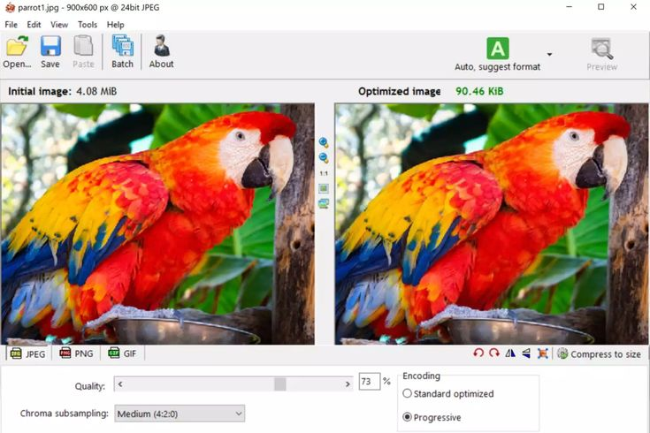

How to Reduce Image Size in KB Without Losing Quality
Large image files slow down websites, increase loading time, and use unnecessary storage space. Whether you're uploading photos to a website, sending images by email, or sharing them on social media, learning how to reduce image size in KB can improve speed, save storage, and provide a better user experience.

Many people think compressing an image always makes it blurry. In reality, modern compression technology allows you to reduce image size in KB while keeping the picture sharp and clear.
With the right settings, you can significantly reduce the file size without making any noticeable difference in quality. This is especially useful for bloggers, website owners, students, photographers, designers, and businesses.
At ToolBucket, you can compress JPG, PNG, and WebP images online without installing any software. The entire process takes only a few seconds.
What Does Reduce Image Size in KB Mean?
The term reduce image size in KB simply means decreasing the storage size of an image while maintaining good visual quality. A smaller file loads faster, uploads quicker, and consumes less storage space.
Instead of reducing the dimensions only, compression removes unnecessary information from the file while preserving important image details.
Example
- Original Image: 2 MB
- Compressed Image: 250 KB
- Quality Difference: Almost Impossible to Notice
When you reduce image size in KB, your website becomes faster, files are easier to upload, and visitors enjoy a smoother browsing experience.
When Should You Reduce Image Size in KB?
Many users only compress images when they see an upload error. However, it's always a good practice to reduce image size in KB before uploading any image online.
Bloggers usually compress featured images before publishing articles because smaller files improve page speed.
Students often need to upload assignments on university portals that have strict file-size limits. Compressing images helps avoid upload failures.
Business owners also compress product images before sending them through email. Smaller files are quicker to upload and easier for customers to download.
Social media creators regularly reduce image size in KB because optimized files upload faster while maintaining excellent visual quality.
Why Website Owners Should Reduce Image Size in KB
Website speed is one of Google's important ranking factors. Large images increase loading time, hurt Core Web Vitals, and create a poor user experience.
Every time you reduce image size in KB, your pages become lighter and faster. Visitors spend less time waiting, bounce rates decrease, and search engines can crawl your pages more efficiently.
Benefits of Compressing Images
Faster Website
Smaller images improve page loading speed and user experience.
Better SEO
Faster websites generally perform better in search engines.
Save Storage
Compressed images use less disk space on computers, mobiles, and cloud storage.
Easy Sharing
Smaller files upload faster and can be shared through email and messaging apps without issues.
Best Methods to Reduce Image Size in KB
There are several ways to reduce image size in KB. The right method depends on how you plan to use the image. Below are the most effective techniques.
1. Use an Online Image Compressor
The easiest way to reduce image size in KB is by using an online image compressor. Simply upload your image, choose the compression level, and download the optimized version.
ToolBucket Image Compressor allows you to compress JPG, PNG, and WebP images without installing any software.
👉 Try the Image Compressor Tool
2. Resize Image Dimensions
Sometimes an image has much larger dimensions than required. For example, if your image is 5000 × 3500 pixels but your website displays it at only 1200 × 800 pixels, resizing can significantly reduce the file size.
3. Convert Images to WebP
WebP is a modern image format that usually provides smaller file sizes than JPG and PNG while maintaining excellent quality.
- Smaller file size
- Excellent image quality
- Faster loading speed
- Better SEO performance
Does Reducing Image Size Affect Quality?
This is one of the most common questions users ask. The answer depends on the compression level and the tool you use.
If you use a trusted tool like ToolBucket, you can reduce image size in KB while keeping your image clear and sharp.
Professional photographers often compare the original and compressed versions before downloading to ensure the quality meets their needs.
How to Choose the Right Compression Level
Every image is different. A product photo may only need light compression, while screenshots or graphics can often be compressed much more.
- Use light compression for professional photography.
- Use medium compression for websites.
- Use stronger compression for email attachments.
- Always preview the image before downloading.
Common Mistakes to Avoid
- Compressing the same image multiple times.
- Uploading oversized images.
- Ignoring image dimensions.
- Using PNG when JPG is sufficient.
- Choosing maximum compression unnecessarily.
Why Choose ToolBucket?
ToolBucket makes image optimization simple for everyone.
- ✔ Compress images online for free
- ✔ Reduce image size in KB instantly
- ✔ Supports JPG, PNG and WebP
- ✔ No registration required
- ✔ Fast and secure processing
- ✔ Easy-to-use interface
Whether you're a blogger, student, developer, photographer, or business owner, ToolBucket helps you optimize images in seconds.
Frequently Asked Questions
How can I reduce image size in KB without losing quality?
Use an online image compressor like ToolBucket to optimize your images while keeping them visually clear.
Is it safe to compress images online?
Yes. Trusted image compressors process files securely, and many don't permanently store uploaded images.
Which image format has the smallest file size?
WebP usually provides the smallest file size while maintaining excellent image quality.
Can I compress JPG and PNG images?
Yes. Both formats can be compressed effectively depending on the original image.
Does image compression improve SEO?
Yes. Optimized images improve page speed, Core Web Vitals, and overall website performance, which can positively impact SEO.
Compress Your Images for Free
Ready to reduce image size in KB without losing quality?
Use ToolBucket Image CompressorFinal Thoughts
Learning how to reduce image size in KB is essential for anyone who works with digital images. Smaller files load faster, improve website speed, save storage space, and provide a better user experience.
By choosing the right image format, resizing unnecessary dimensions, and using a reliable compression tool, you can optimize your images without sacrificing quality.
If you're looking for a fast, free, and secure solution, ToolBucket is here to help. Explore our Image Compressor, Image Resizer, and other optimization guides to make your images web-ready in just a few clicks.